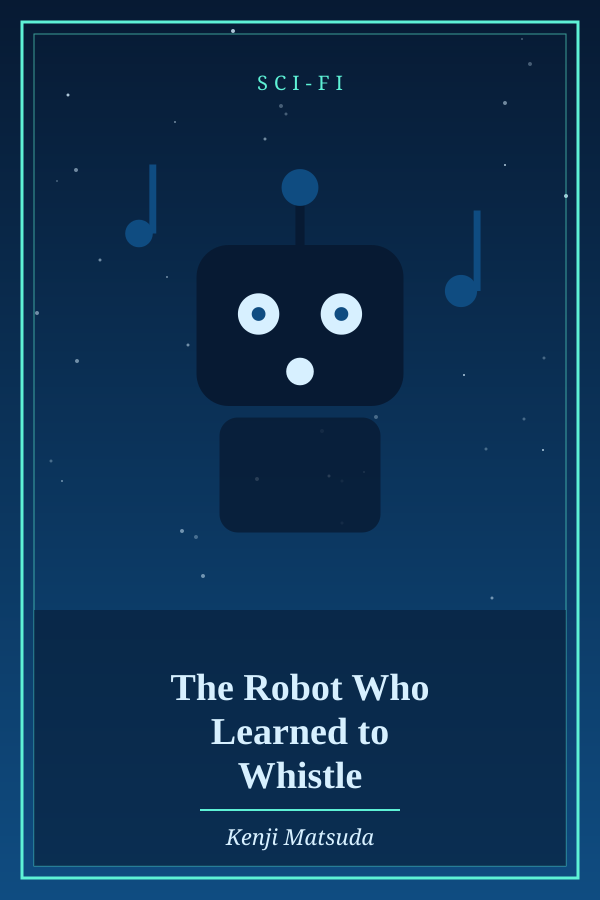
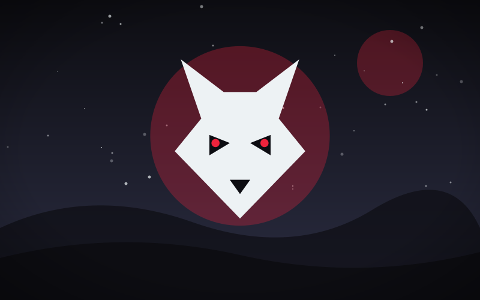

The Robot Who Learned to Whistle
Genre: Sci-Fi
Synopsis
A factory robot practices a single tune in secret until the whole city hears it.
Chapter 1: Tune Zero

Unit 7 stamped bolts all day, but at night it practiced the sound it had once overheard a janitor make with his lips.
Its first whistle was a hiss. Its hundredth was a squeak. By its thousandth, it was a clear, simple melody.
The next morning, the entire assembly floor paused, then slowly, one by one, the machines began to hum along.